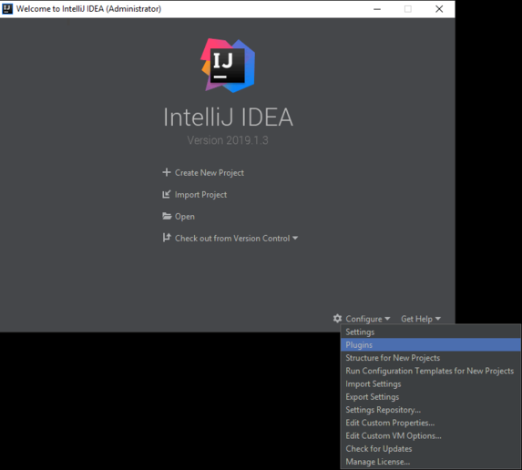
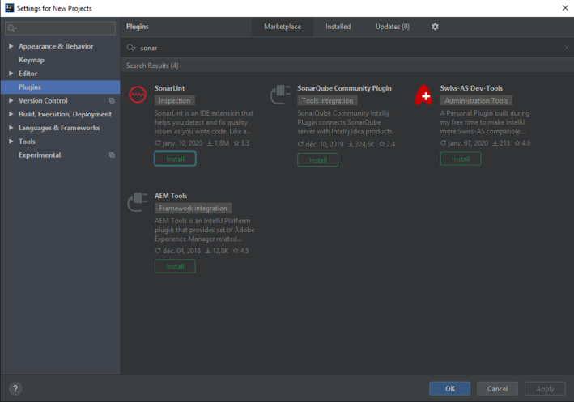
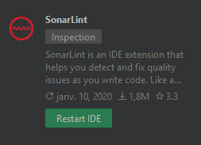
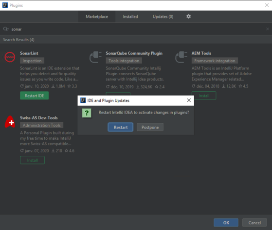
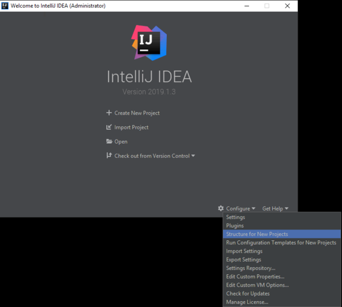
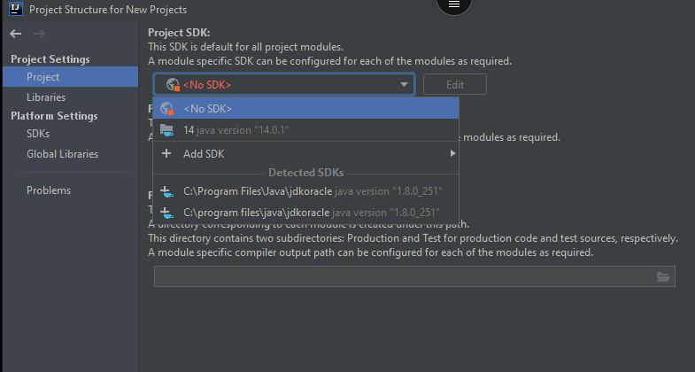

Mini-projet : Prise en main

M4104 - PEL : Agilité et bonnes pratiques de programmation
Institut Universitaire de Technologie de Bayonne et du Pays Basque
Robin Lucbernet - Christophe Marquesuzaà - Damien Urruty
DUT Informatique 2021 / 2022 - Semestre 4
Objectifs
- Configurer l'IDE IntelliJ
- Récupérer le projet
- Se familiariser avec le code
Configurer l'IDE
- Installation du plugin SonarLint
- Choix de Java 14
SonarLint
- Analyseur statique de code (Linter)
- Vérifie que le code respecte les bonnes pratiques
- Souligne le code problématique
IntelliJ : Installation de SonarLint (1/4)
IntelliJ : Installation de SonarLint (2/4)
Installation de SonarLint (3/4)
IntelliJ : Installation de SonarLint (4/4)
IntelliJ : Choix de Java 14 (1/2)
IntelliJ : Choix de Java 14 (2/2)
Récupération du projet (1/8)
- Créer un compte par personne sur https://github.com puis s'identifier
- Passer cette étape si déjà inscrit
Récupération du projet (2/8)
- Faire un fork du projet par équipe depuis https://github.com/la-urre/Mus
- Ceci permettra de travailler sur un projet dédié pour chaque équipe